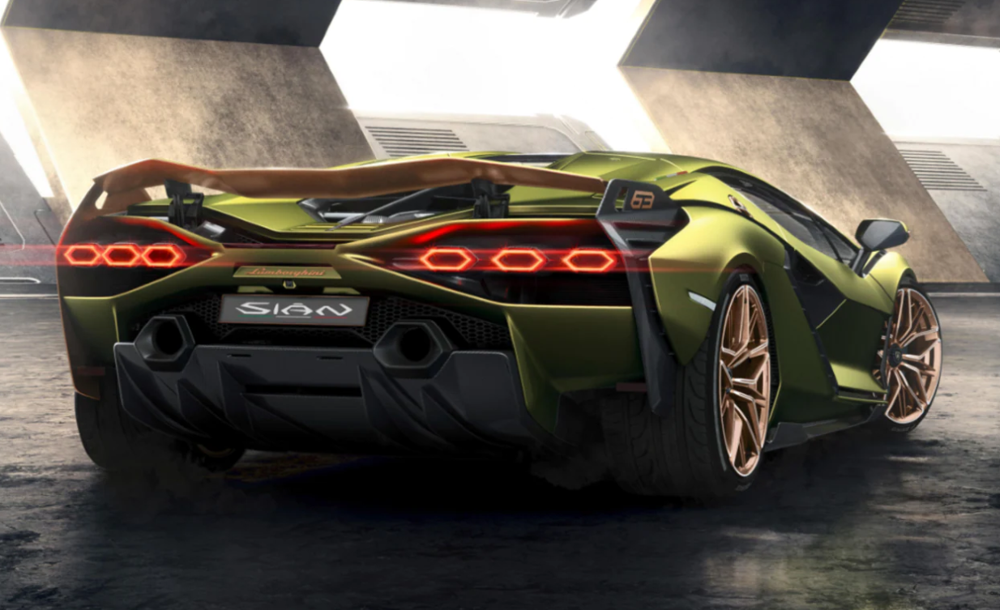
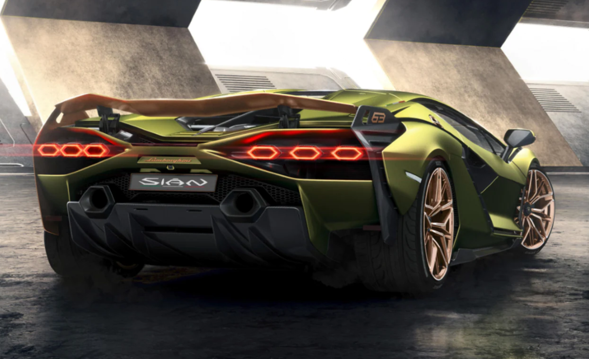
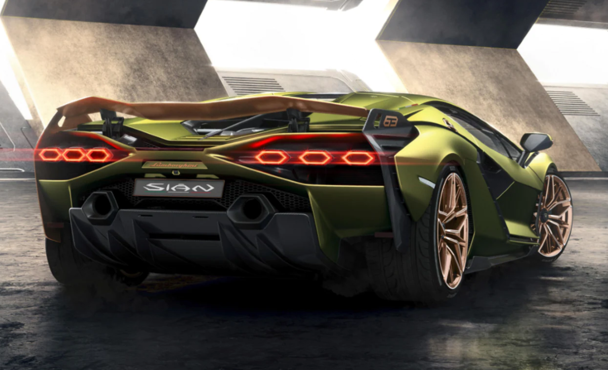
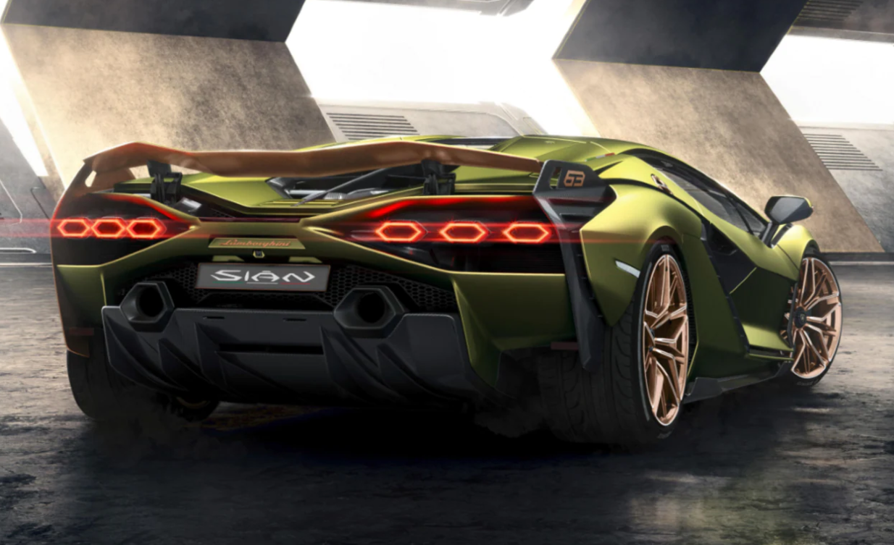

The Lamborghini Sián FKP 37 is a mid-engine hybrid sports car produced by the Italian automotive manufacturer Lamborghini. Unveiled online on 3 September 2019, the Sián is the first hybrid production vehicle produced by the brand and has 4 driving mode:Sport, Hybrid,Superhyper and Edrive